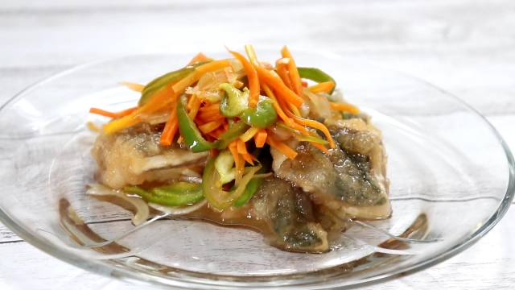

アジの南蛮漬け

材料 2～3人分
- アジ(3枚おろし)
- 2〜3尾
- 玉ねぎ
- 1/4個
- にんじん
- 1/3本
- 酢
- 100cc
- 砂糖
- 大さじ2
- 醤油
- 小さじ2
- 塩
- 少々
- 和風だしの素
- 小さじ1
- 片栗粉
- 適量
作り方
1
玉ねぎは薄切りに、にんじんは千切りにします。
保存容器に酢、砂糖、醤油、塩、和風だしの素を入れよく混ぜて、玉ねぎ、にんじんを入れてなじませておきます。
2
小骨を取ったアジを食べやすい大きさに切り、片栗粉をまぶします。
3
フライパンに油を入れて熱し、アジを入れて上下に返しながら中火で揚げ焼きにします。
4
４に3を入れて、10分以上漬け込んだら完成です。